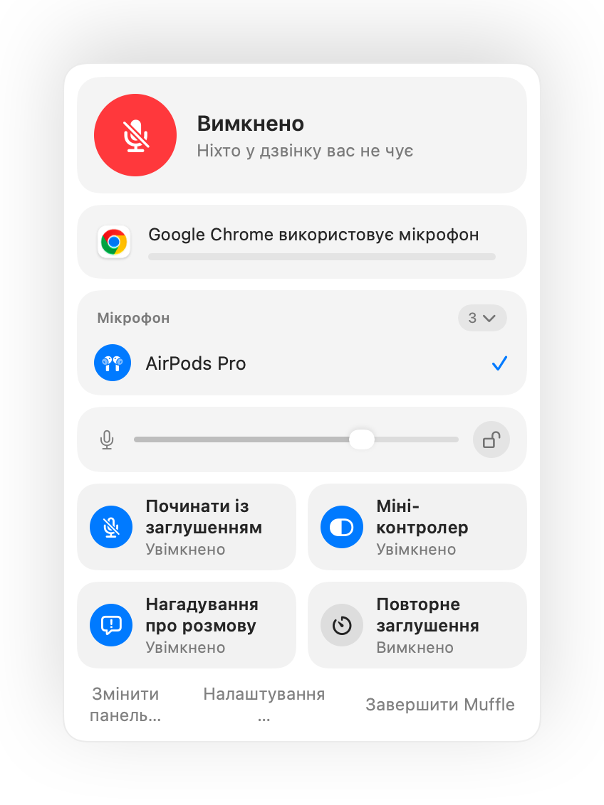
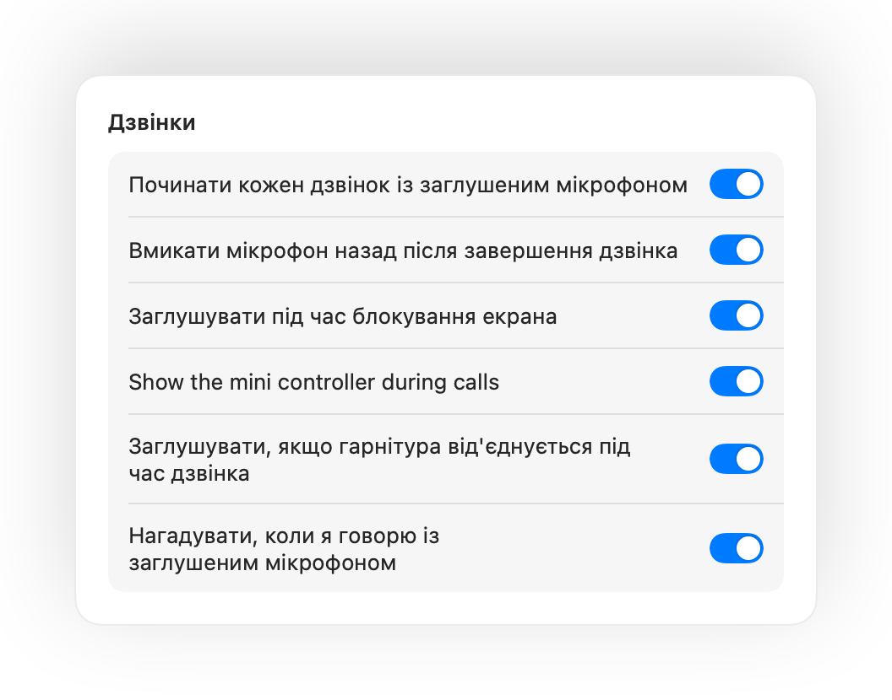
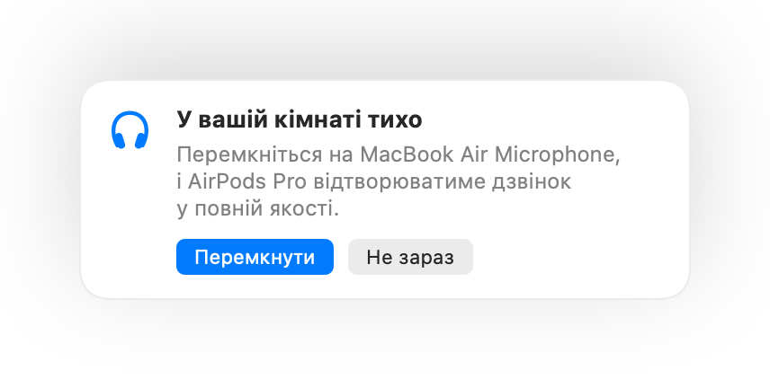
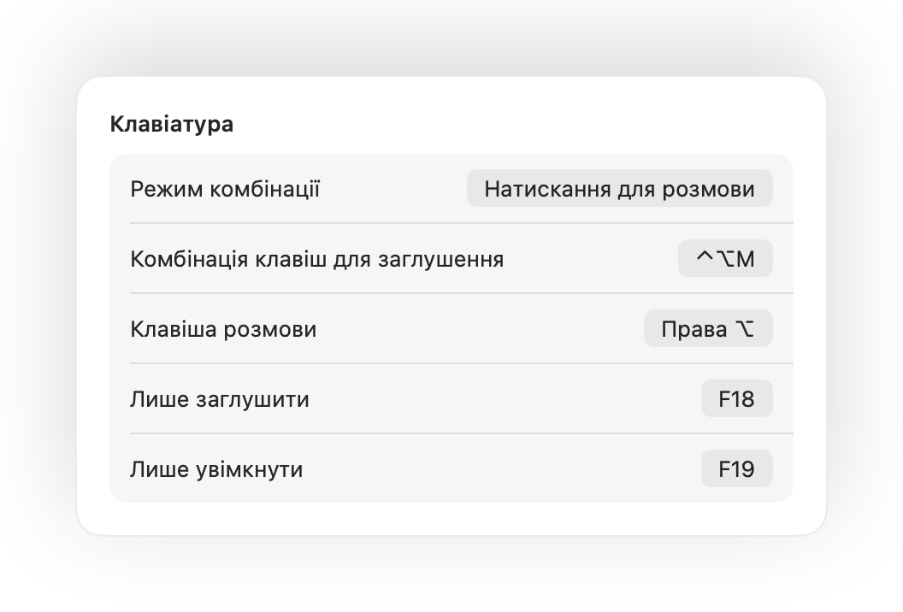

Натисніть AirPods.
Під час будь-якого дзвінка натисніть ніжку. Muffle вимикає сам мікрофон, тому Meet, Zoom, Teams і будь-які інші застосунки нічого не чують.

Muffle для Mac
Натисніть AirPods або одну комбінацію клавіш. Muffle вимикає сам мікрофон, тому Google Meet, Zoom, Teams, Slack та інші застосунки чують лише тишу.
3 дні безкоштовно. Потім один платіж, без підписки. Для macOS 14 Sonoma і новіших версій.

Muffle вимикає мікрофон на апаратному рівні, тому не має значення, який застосунок, браузер чи вкладка його використовує.
Під час будь-якого дзвінка натисніть ніжку. Muffle вимикає сам мікрофон, тому Meet, Zoom, Teams і будь-які інші застосунки нічого не чують.

Єдина комбінація для кожного застосунку, навіть коли дзвінок у фоновій вкладці. Утримуйте її, щоб говорити, або перемкніться на натискання для розмови.
Muffle розпізнає ваш голос і нагадає вам, перш ніж ви поясните всю свою ідею в порожнечу.

Невелика рухома кнопка показує стан мікрофона й заглушає його одним клацанням. Зелений колір означає увімкнений мікрофон, червоний вказує на заглушений.

Почніть говорити із заглушеним мікрофоном, і Muffle попередить вас про це до того, як ви розкажете всю ідею в порожнечу.
Під час будь-якого дзвінка натисніть ніжку один раз, щоб заглушити мікрофон, і ще раз, щоб увімкнути його. Це працює навіть у Chrome, де Google Meet та інші вебдзвінки ігнорують натискання AirPods.
Control-Option-M заглушує звук усюди, навіть якщо дзвінок триває у фоновій вкладці. Утримуйте комбінацію, щоб говорити, поки мікрофон заглушено, і відпустіть, щоб знову заглушити.
Невелика рухома кнопка показує стан мікрофона під час дзвінків. Клацніть її, щоб заглушити або увімкнути звук.
Починайте кожен дзвінок із заглушеним мікрофоном, вмикайте його назад після завершення дзвінка та заглушуйте звук під час блокування екрана Mac.

Увімкнули мікрофон, щоб сказати щось одне? Якщо потім ви мовчите вибраний час, Muffle знову заглушить його. Враховується лише ваш голос, а не набір тексту чи фоновий шум.
Chrome, Zoom і Teams самостійно змінюють рівень мікрофона. Зафіксуйте його, і Muffle повертатиме потрібне значення.
У тихій кімнаті з AirPods Muffle пропонує мікрофон вашого Mac, щоб навушники відтворювали дзвінок у високій якості. Якщо стане шумно, він запропонує мікрофон AirPods.

Виберіть, як діє комбінація: натискання для перемикання, утримування для розмови або для заглушення під час кашлю. Додайте окремі клавіші або утримуйте одну клавішу, як-от Праву Option чи кнопку миші.

Якщо гарнітура від'єднається посеред дзвінка, Muffle заглушить звук до того, як розмова перемкнеться на мікрофон Mac і в ефір потрапить уся кімната.
Заглушуйте мікрофон із застосунку Команди, через Siri, Stream Deck, Raycast або кнопкою в Центрі керування.
Зелене або червоне світіння країв екрана, кольоровий значок у смузі меню, плаваюча кнопка та звук, який можна вимкнути для кожного мікрофона. Увімкніть те, що вам до вподоби.
Muffle ніколи не записує, не зберігає і не надсилає звук. Він лише вмикає та вимикає мікрофон і вимірює його гучність. Жодних облікових записів, аналітики чи відстеження.
Встановіть Muffle із Mac App Store і дозвольте доступ до мікрофона.
Приєднайтеся до дзвінка в будь-якому застосунку, як зазвичай.
Натисніть AirPods, натисніть Control-Option-M або клацніть значок у смузі меню, щоб заглушити мікрофон.
Так. Chrome не передає натискання AirPods для заглушення у вебдзвінки, тому Muffle перехоплює його і вимикає сам мікрофон. Те саме стосується будь-яких дзвінків у вкладках браузера.
Застосунок для дзвінків може й далі показувати мікрофон увімкненим, оскільки Muffle вимикає сам мікрофон, а не кнопку в застосунку. У будь-якому разі співрозмовники чутимуть лише тишу. Значок Muffle у смузі меню стає червоним, коли мікрофон заглушено.
AirPods Pro, AirPods 3 і новіші версії, AirPods Max, а також моделі Beats із підтримкою керування дзвінками. Комбінація клавіш і смуга меню працюють із будь-яким мікрофоном.
Так. Muffle працює з кожним застосунком на вашому Mac, який використовує мікрофон, як із програмами для комп'ютера, так і з дзвінками у браузері.
Ні. Спробуйте всі можливості безкоштовно протягом 3 днів, а потім розблокуйте Muffle одноразовою покупкою.
macOS передає натискання AirPods лише тим застосункам, які використовують мікрофон, тому Muffle тримає відкритим беззвучне з'єднання під час дзвінків. Нічого не записується.
Muffle вмикає мікрофон назад під час завершення роботи, тому звук ніколи не залишиться заблокованим.
macOS 14 Sonoma та новіші версії. Для кнопки в Центрі керування потрібна macOS 26 або новіша.
Так. Виберіть «Натискання для розмови» у Налаштуваннях та утримуйте комбінацію, щоб говорити. Також можна утримувати одну клавішу, як-от Праву Option чи fn, або додаткову кнопку миші.
Коли дзвінок задіює мікрофон AirPods, навушники переходять у режим виклику, який відтворює звук із нижчою якістю. У тихій кімнаті Muffle пропонує мікрофон вашого Mac, щоб гарнітура зберігала повну якість звуку.
Ні. Muffle розпізнає мовлення за допомогою аналізу звуку Apple безпосередньо на пристрої, тому враховується лише розмова. Набір тексту, клацання та фоновий шум не враховуються, і нічого не записується.
Короткі та практичні інструкції, як заглушити мікрофон на Mac у будь-якому застосунку.
Спробуйте Muffle безкоштовно протягом 3 днів.